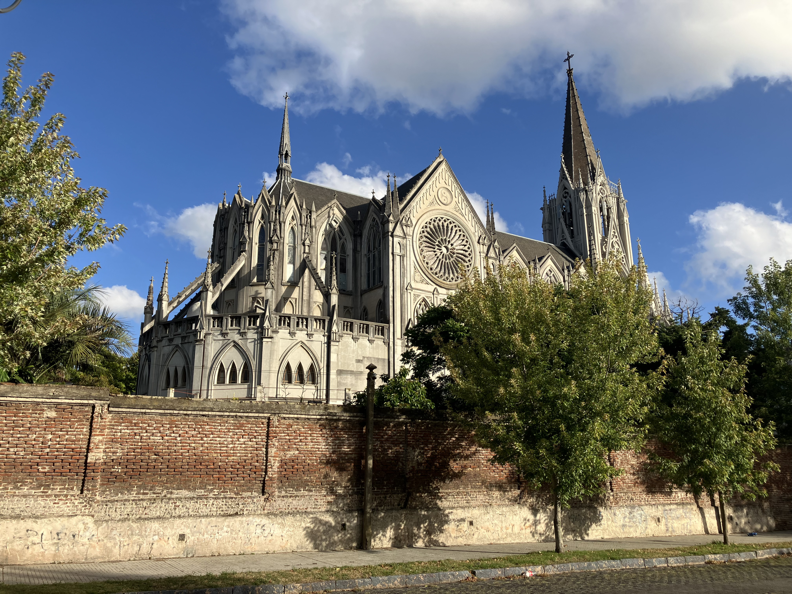
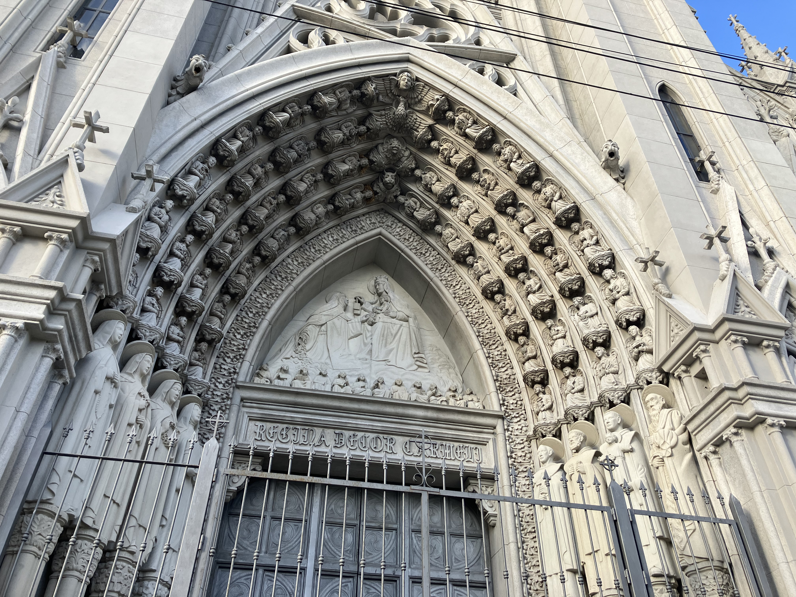
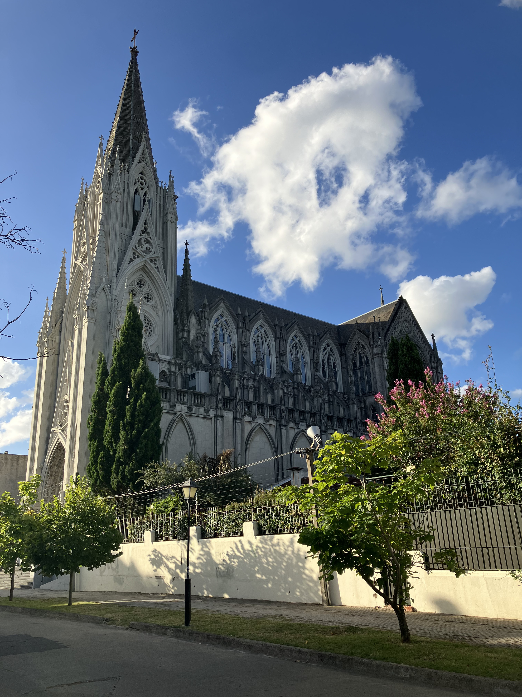

Iglesia de las Carmelitas

Architect: Román Berro, Américo Bonaba
Location: Irigoitía 2017, Montevideo
Completed: 1954
Style: Neo-Gothic
History
Known popularly as Las Carmelitas, the Church of Virgen del Carmen y Santa Teresita became one of Montevideo’s most beloved religious landmarks during the twentieth century. Completed in 1954, it was built to serve the growing Prado neighborhood while creating a spiritual and visual landmark that would distinguish the district from the rest of the city.
Architecture
Its Neo-Gothic design is immediately recognized through its pointed arches, vertical emphasis, stained glass windows, and elegant twin towers that dominate the surrounding landscape. Inspired by medieval European cathedrals, the church combines spiritual symbolism with architectural drama, creating one of the most picturesque religious buildings in Montevideo.
Legacy
The church has become far more than a place of worship; it is one of the most iconic visual symbols of the Prado district and one of the most photographed churches in Uruguay. Its distinctive silhouette and emotional connection with local residents have made it a lasting part of Montevideo’s cultural and architectural memory.
Gallery


